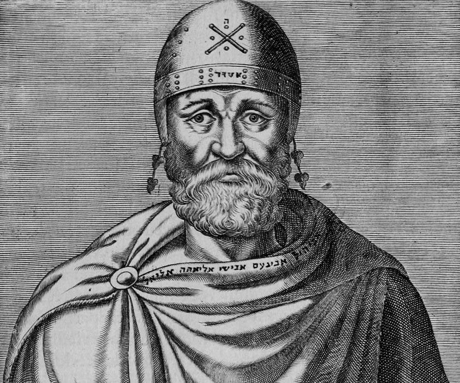

Welcome to the Mathematical World!
Philo of Alexandria
The Philosopher of Faith and Reason
Philo of Alexandria (c. 20 BCE – 50 CE), also known as Philo Judaeus, was a Hellenistic Jewish philosopher who lived in Alexandria, Egypt. He sought to synthesize Greek philosophy—especially Platonism and Stoicism— with Jewish theology, creating one of the earliest bridges between faith and reason. His writings explored logic, metaphysics, ethics, and allegorical interpretation, influencing Jewish thought, early Christianity, and later Islamic philosophy. By introducing the concept of the Logos as a divine intermediary, he laid the intellectual groundwork for ideas that shaped religious and philosophical traditions for centuries.
Philosophy and Teachings
- Allegorical Interpretation of Scripture — Philo argued that the Hebrew Bible should not always be read literally but symbolically, with stories like Genesis representing deeper truths about creation, the cosmos, and the soul.
- The Logos (Divine Reason) — He introduced the concept of the Logos, or Divine Word:
- God is utterly transcendent and beyond human comprehension.
- The Logos is God’s instrument of creation and revelation.
- The Logos serves as a rational bridge between the infinite God and the finite world.
- Mathematical and Philosophical Harmony — Influenced by Plato and the Stoics, Philo believed that numbers, order, and proportion reflected divine wisdom. For him, mathematics symbolized eternal truths and revealed the rational structure of the universe, showing that both reason and revelation expressed the same cosmic order.
Ethics and the Soul
Philo taught that the human soul is divided between passions and reason. Virtue arises from following reason, aligning the soul with divine law. He emphasized self-control, justice, piety, and wisdom, echoing both Jewish and Greek ethical ideals. Happiness, in his view, came from transcending bodily desires and living according to divine reason.
Historical Role
Philo was also an active community leader. In 40 CE, during rising tensions between Jews and Romans, he led an embassy to Emperor Caligula to defend Jewish rights in Alexandria. Though politically unsuccessful, this mission revealed his stature as both a philosopher and a statesman.
Legacy
- Christianity — Early Church Fathers such as Clement of Alexandria and Origen drew heavily on his writings, especially his concept of the Logos.
- Judaism — While rabbinic Judaism did not adopt his allegorical method, modern Jewish philosophy regards him as a foundational figure in Jewish intellectual history.
- Philosophy — His integration of Platonism, Stoicism, and Jewish theology created a framework that bridged Greek philosophy with Abrahamic religion.
Facts
- Born in Alexandria, Egypt.
- Belonged to a wealthy, educated Jewish family.
- Introduced the concept of the Logos as divine reason.
- Applied allegorical interpretation to the Hebrew Bible.
- Influenced Christian, Jewish, and Islamic philosophy.